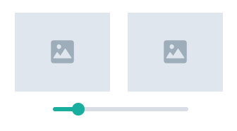

A Salem le gusta escuchar historias de terror, de magia negra, de espíritus. También le gusta el atún en lata. Estos son sus podcasts preferidos:
Gala es geek, apasionada del futuro, gamer, fan de la programación. Le gustan las pelotitas con luces y prefiere las piedritas autoaglomerantes. Estos son sus podcasts preferidos:
A Lola le gusta le gusta divertirse. Sus hobbies son tirar cosas de arriba de las mesas y esconderse abajo de la cama para agarrar los pies de sus humanos cuando pasan. Sus podcasts favoritos son:
Neko es no binarie, le gusta dormir al sol y escuchar podcasts de astrología, psicología y desarrollo personal. Estos son sus podcasts preferidos:
A Raúl le gusta pelearse en los techos, el rock pesado y las bandas nuevas alternativas. Estos son sus podcasts preferidos: